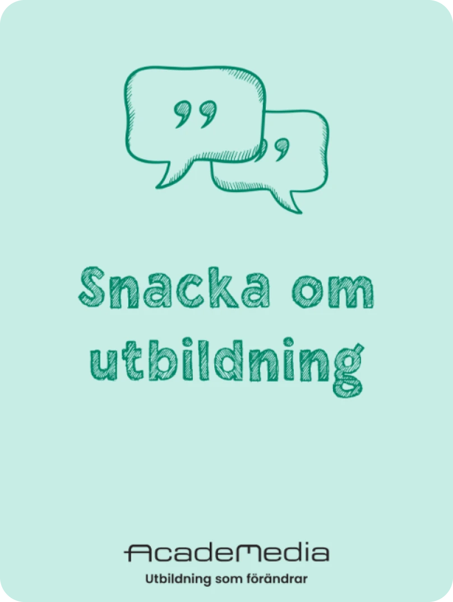
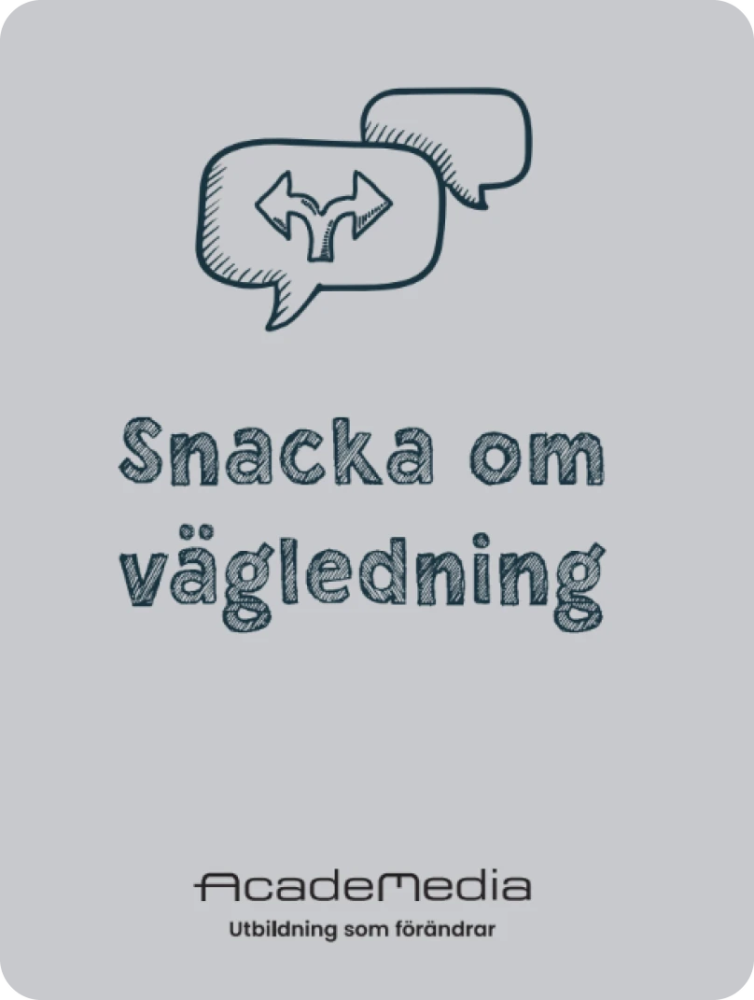
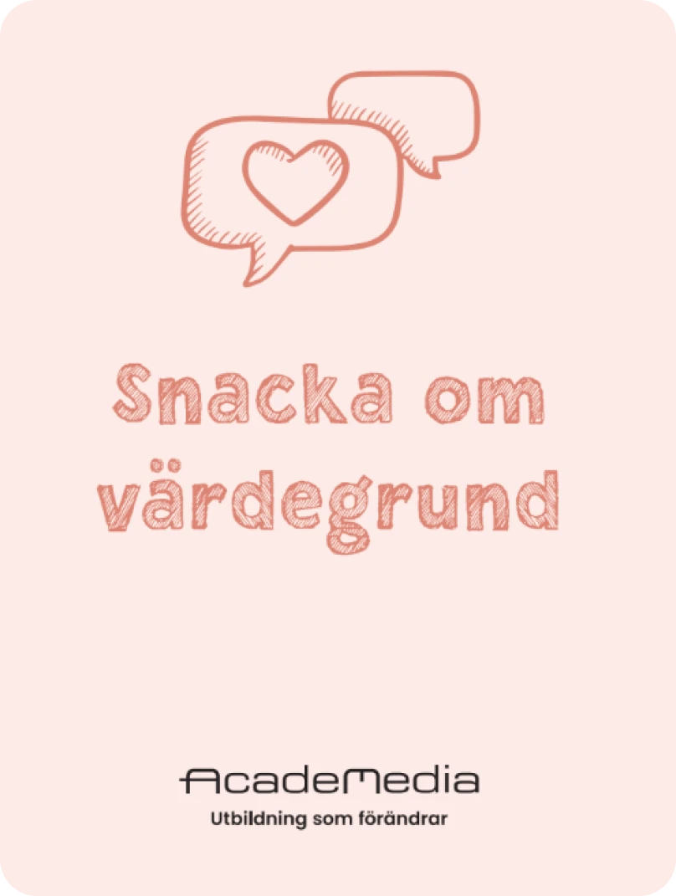
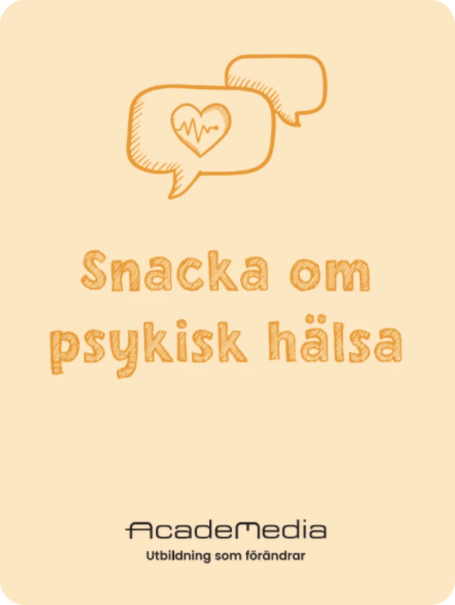
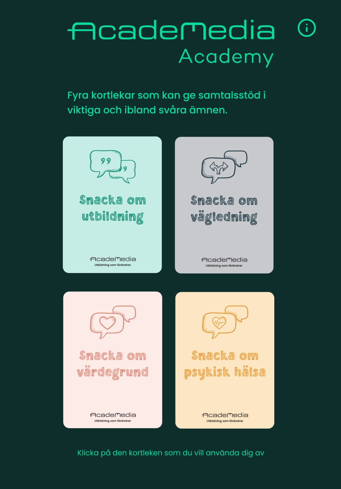
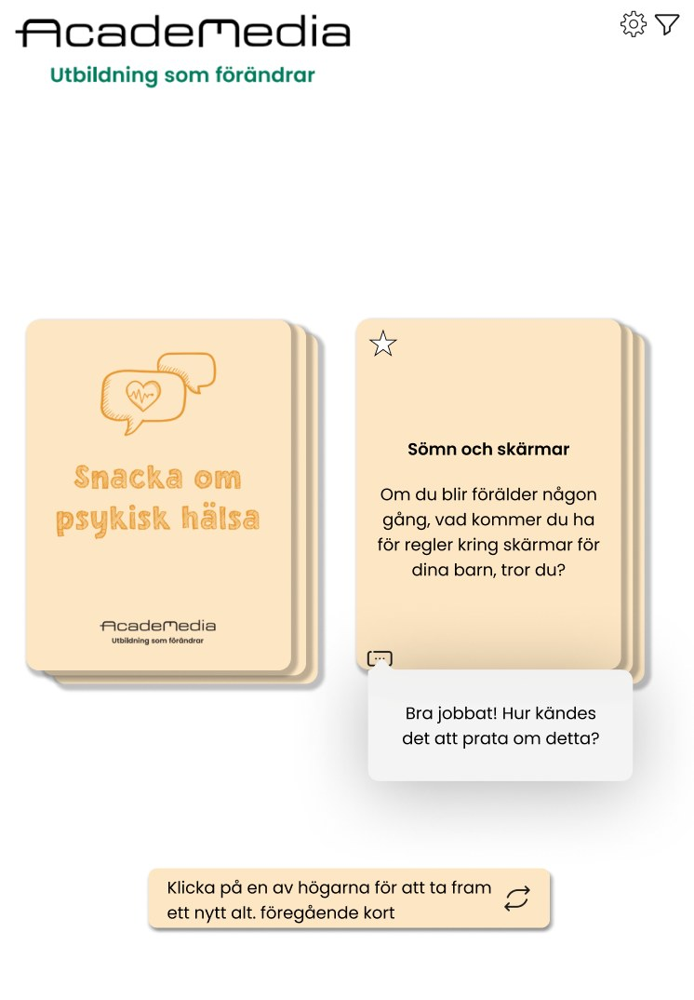

ACADEMEDIA




Introduction
Digitising AcadeMedia’s educational value cards to create a more accessible, engaging and flexible learning experience, while keeping the familiarity of the physical cards.
Design challenge
How might we turn physical value cards into an intuitive, inclusive digital experience without losing their tactile feel and sense of emotional safety?
Process
- ResearchInterviewed educators and observed how the cards are used in the classroom.
- IdeationDeveloped concepts and prototypes based on user insights.
- TestingIterated on the design based on educator feedback.
- Snacka om utbildning
- Snacka om vägledning
- Snacka om värdegrund
- Snacka om psykisk hälsa
Solution
An interactive digital prototype with intuitive navigation, card browsing and filtering. It helps educators lead meaningful conversations and adapt to each child’s needs, in the classroom and remotely.


Key learnings
Balancing digital functionality with pedagogical safety mattered most.
Early user research and careful visual design made the app complement the physical cards rather than replace them.